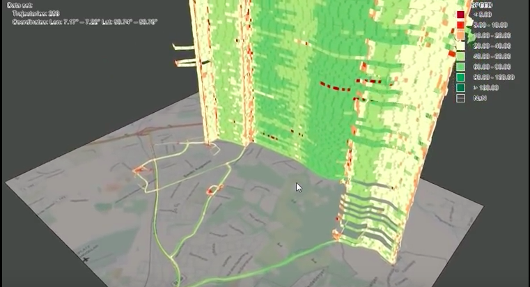
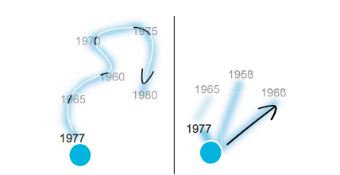
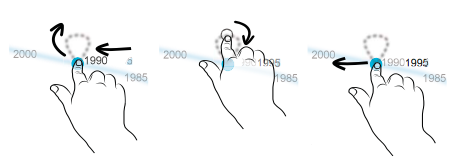
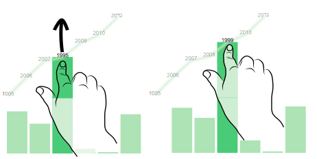
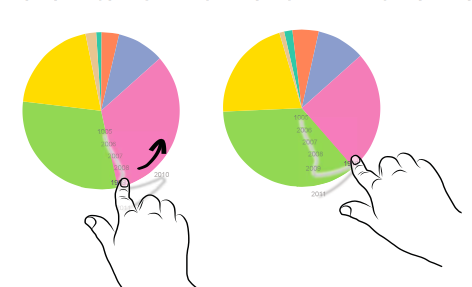
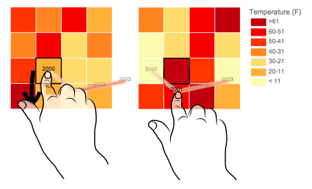

DimpVis
Exploring Time-varying Information Visualizations by Direct Manipulation
Paper by Brittany Kondo and Christopher Collins
Presentation by Sam Fries
Time Changes All Things
- Many types of data vary over time
- Standard chart types frequently used
- Animation used to show the effects of time
- Divides attention between state and data
Things Change All The Time
- Drag objects to change time
- Keep primary focus on data
- Display a path of all other values
It slices, it dices, it makes julienne fries
- Can be used in several ways
- Change position, size, or color
- Authors made demos for scatter, bar, pie, and heat map
Nothing new under the sun
Visualizing Temporal Trends
-
Trace Visualization
- Illustrates trends of points in time-varying scatterplots
- Stacked Bands

Temporal Navigation
- Temporal filters
- Small Multiples
- Animation
- Lenses
Direct Manipulation
- Should aim to reduce friction between user and task
- Instant feedback
- Adjacent
Object-Centric Interaction
- DimP & DRAGON
- Drag-Cell
- Filtering, scaling
What would you say... you do here?
Direct object interaction for temporal navigation
Design Considerations
- Hint Path (Flashlight vs Timeline)

- Input Mechanisms (Touch vs Mouse)
- Repeat Values

Other Chart Types



What good is it?
- Retrieve Value
- When is point A at age=50 and height=5?
- Comparison
- When is point A’s age and height greater than point B's?
- Characterize Distribution
- After the age and height of point A have been increasing, find the first year when they are both decreasing.
- Outlier Detection
- Find the first year when point A is moving in the opposite direction of the other points.
What good is it?
Scatter Plot Times:
| Task |
DimpVis |
Slider |
Small Multiples |
| Retrieve Value |
~9 seconds |
~11 seconds |
~11 seconds |
| Comparison |
~10 seconds |
~11 seconds |
~13 seconds |
| Characterize Distribution |
~8 seconds |
~9 seconds |
~14 seconds |
| Outlier Detection |
~11 seconds |
~11 seconds |
~25 seconds |
What good is it?
Bar Chart Times:
| Task |
DimpVis |
Slider |
Small Multiples |
| Retrieve Value |
~9.5 seconds |
~10 seconds |
~12 seconds |
| Comparison |
~15.5 seconds |
~16 seconds |
~18 seconds |
| Characterize Distribution |
~13 seconds |
~12 seconds |
~16 seconds |